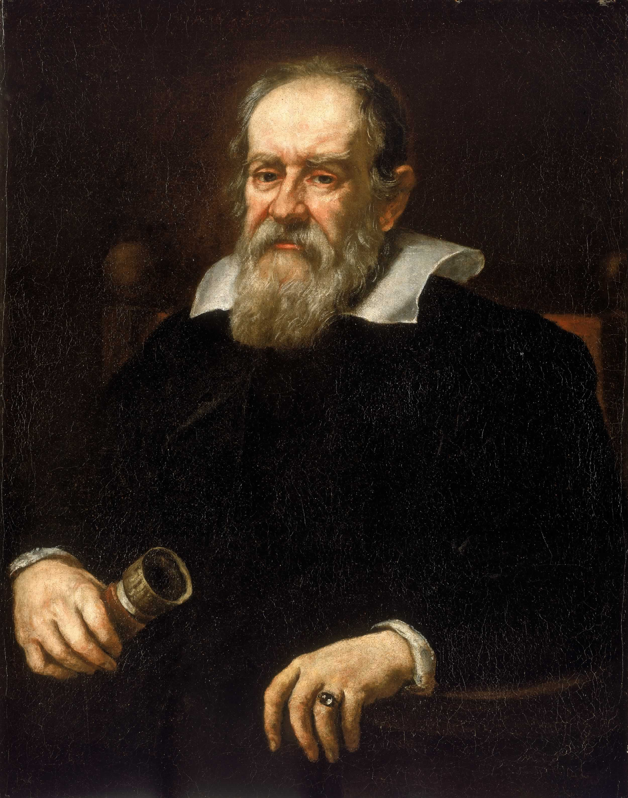

กาลิเลโอ กาลิเลอี (Galileo Galilei):

นักวิทยาศาสตร์ผู้ซึ่งเป็นเจ้าของฉายา "บิดาแห่งวิทยาศาสตร์ยุคใหม่" คนนี้ เกิดที่ประเทศอิตาลี เมื่อวันที่ 15 กุมภาพันธ์ ค.ศ. 1564 (พ.ศ. 2107) และมีชีวิตอยู่จนอายุ 77 ปี จนกระทั่งเสียชีวิตเมื่อวันที่ 8 มกราคม ค.ศ. 1642 (พ.ศ. 2185) โดยเขาเป็นผู้ที่สร้างความเปลี่ยนแปลงให้กับแนวคิดของวิทยาศาสตร์ยุคก่อนอย่างสิ้นเชิง ด้วยการยึดมั่นในทฤษฎีของตัวเองว่าดาวเคราะห์เป็นฝ่ายหมุนรอบดวงอาทิตย์ ซึ่งขัดกับความเชื่อของชาวคริสต์ในสมัยก่อนที่สนับสนุนทฤษฎีของอริสโตเติล ที่เชื่อว่าพระอาทิตย์และดวงจันทร์เป็นฝ่ายหมุนรอบโลก จนทำให้เขาถูกห้ามไม่ให้สอนนักเรียนของเขาเกี่ยวกับทฤษฎีนี้อีก มิฉะนั้นจะถูกจับเผาทั้งเป็น เขาจึงได้ประดิษฐ์กล้องโทรทรรศน์ขึ้นมาด้วยตัวเองเพื่อศึกษาเพิ่มเติมและพิสูจน์ว่าทฤษฎีของเขาเป็นความจริงในที่สุด